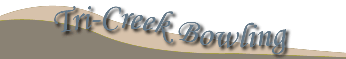

Bowl
Bowl

A family-friendly atmosphere, open 24 hours a day. The Tri-Creek Bowling Center has 32 start-of-the-art bowling lanes, a large subdivided game room, and a banquet hall to host any leagues parties and tournaments. On Friday nights from 7 p.m. to 10:30 p.m., lanes 22 to 32 are reserved for the teens to bowl and listen to DJ Marky Phelps. Saturday nights from 6 p.m. to 10 p.m. we cater to families and offer special discounts.